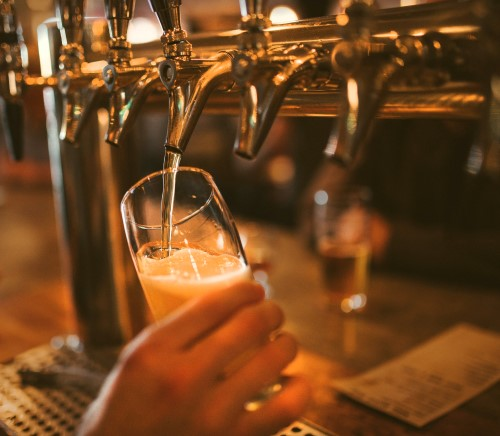

Blonde Ale · 4.2% · Detroit, MI
16oz Draft $6
Porter · 5.0% · Detroit, MI
16oz Draft $6
Cider · 5.5% · Ferndale, MI
10oz Draft $6
Amber Ale · 5.8% · Comstock, MI
16oz Draft $5.25
Double IPA · 10.0% · Comstock, MI
10oz Draft $7
IPA · 7.0% · Comstock, MI
16oz Draft $6
Fruit Cider · 6.5% · Armada, MI
16oz Draft $6
NE/Hazy IPA · 5.5% · Holland, MI
16oz Draft $7
IPA · 6.5% · Marshall, MI
16oz Draft $6
Sour Ale · 6.0% · Detroit, MI
12oz Draft $7.25
IPA · 4.7% · Grand Rapids, MI
16oz Draft $6
Stout · 7.8% · Grand Rapids, MI
10oz Draft $6
Fruit Beer · 5.7% · Grand Rapids, MI
10oz Draft $6
IPA · 7.25% · Birmingham, MI
16oz Draft $6
Double IPA · 9.5% · Warren, MI
10oz Draft $6
Cream Ale · 5.2% · Lansing, MI
16oz Draft $7
Imperial Stout · 11.0% · Holland, MI
10oz Draft $6
Milkshake IPA · 6.6% · Traverse City, MI
16oz Draft $7
Imperial Stout · 12.0% · Grand Haven, MI
10oz Draft $9
IPA · 6.8% · Williamston, MI
10oz Draft $6
Pilsner · 5.0% · Williamston, MI
16oz Draft $6
Amber Ale · 5.8% · Traverse City, MI
16oz Draft $6
Stout · 8.5% · Royal Oak, MI
16oz Draft $7
IPA · 7.5% · Royal Oak, MI
16oz Draft $6
Irish Red Ale · 5.8% · Rochester, MI
16oz Draft $6
Fruit Beer · 7.5% · Bellaire, MI
16oz Draft $6